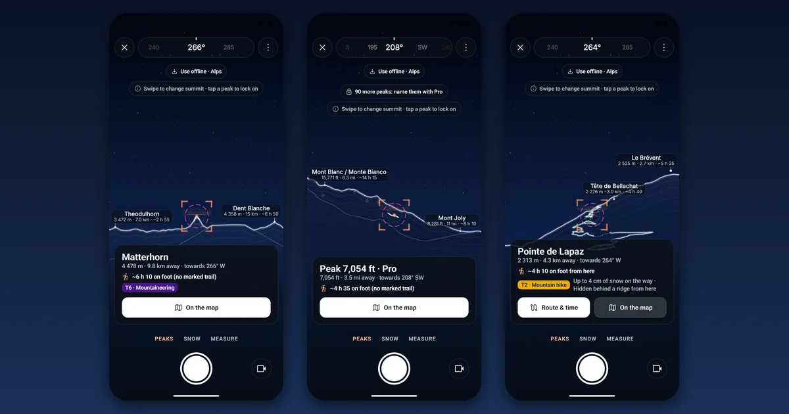
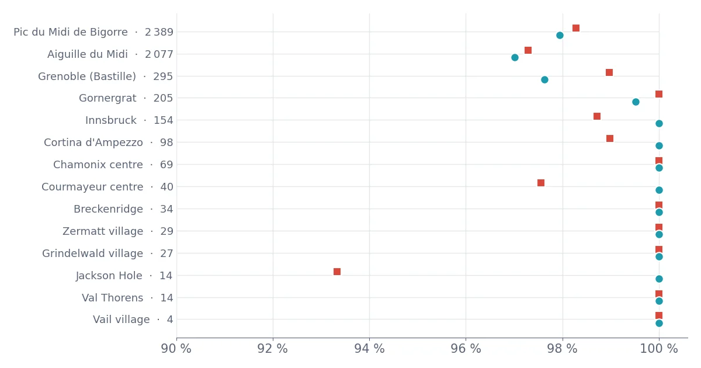

Gratis app för att känna igen berg: vi testade toppsökaren
Du står på en terrass i Zermatt, på en kam i Pyrenéerna eller i en skidlift i Colorado, och någon frågar: vilken topp är det där? Toppsökaren i appen SnowScope ger svaret. Rikta mobilen mot bergen så ritar den horisontlinjen och skriver topparnas namn på skärmen, med höjd, avstånd och ungefär hur lång tid det tar att gå upp. Den är gratis att ladda ner, fungerar offline när du har området i mobilen, och namn på alla toppar kostar en enda betalning på 14 kr i Sverige (0,99 $ i USA, 0,99 € i Europa), utan prenumeration. Vi har också testat hur ofta den har rätt, och här visar vi siffrorna, även där den fortfarande misslyckas.
Se snöprognosen för Zermatt live i SnowScope-appenSnödjup, pudervarningar och 3D-kartan, gratis.
Vad toppsökaren gör
Öppna SnowScope, tryck på kameran och välj Toppar. Appen läser av var du står och åt vilket håll mobilen pekar, och ritar sedan bergens linje ovanpå kamerabilden. Varje topp som syns får en etikett: namn, höjd och avstånd. Tryck på en för att låsa på den, så ser du riktningen i grader, gångtiden från där du står och svårighetsgraden på den vanliga leden. Svep för att gå från en topp till nästa.
Några saker skiljer den från en enkel lista över toppar i närheten. Toppar som döljs bakom en närmare kam visas inte som om du kunde se dem; öppnar du en topp från kartan som inte syns, står det på kortet. Ledkortet visar stigningen upp och ner, om du hinner tillbaka före solnedgången och hur mycket snö det ligger på vägen, eftersom SnowScope först och främst är en snöapp. Du kan ta ett foto eller ett kort klipp med namnen på och dela det.
Så fungerar det, enkelt förklarat
Toppsökaren gissar inte utifrån en fotodatabas. Den bygger upp landskapet runt dig från en höjdkarta över marken: punkter var 30:e m inom 8 km från dig, var 90:e m ut till 40 km och en lättare karta längre bort, upp till 120 km. Från din position skickar den en siktlinje åt alla håll och behåller den högsta punkt varje linje träffar. Det ger den horisontlinje du borde se, och en topp får bara namn om den sticker upp över allt framför den. Första gången du använder den på en plats laddar den ner 1 till 3 MB terräng; sedan fungerar den helt utan täckning.
Det svåra är riktningen. En mobilkompass störs lätt av en bil, ett metallräcke eller en skidlift, och några grader räcker för att sätta fel namn på en topp: 5° på 10 km är 875 m i sidled, ofta en helt annan topp. Därför litar toppsökaren inte bara på kompassen. Den letar efter linjen där himlen möter bergen i kamerabilden och vrider den ritade horisontlinjen tills de två stämmer överens. När den har låst håller mobilens gyroskop etiketterna stilla medan du panorerar, och kompassen kan inte längre dra iväg dem.

Hur träffsäker är den? Det här mätte vi
Vi gjorde tre tester, och vi redovisar dem med storlek, för en siffra utan sitt test är inte värd mycket.
Test 1: vilka toppar syns verkligen. På 14 platser i Alperna, Pyrenéerna och Klippiga bergen, från bytorg som Zermatt och Grindelwald till utsiktspunkter som Aiguille du Midi och Pic du Midi, jämförde vi topparna appen listar med en långsam, fullt detaljerad beräkning som använder 30 m-terräng hela vägen ut till 120 km. Av de 5 449 toppar som verkligen var i siktlinjen listade appen 5 330 (97,8 %), och 98,1 % av topparna den listade syntes verkligen. På de 12 platser som inte är stora utsiktspunkter är skillnaden ännu mindre: 975 av 983 hittade, 8 för mycket. Alla 97 kontroller av kända toppar var rätt, till exempel Matterhorn från Zermatt på 8,6 km, Mont Blanc från Chamonix på 10,1 km och från Grenoble på 113 km.
Test 2: riktiga foton. Vi tog 12 foton med en mobil i Ourikadalen och runt Oukaïmeden i Höga Atlas i Marocko, och sparade vad mobilens sensorer sa vid varje bild. 6 foton hade en tydlig horisontlinje. Kompassen visade fel med mellan 1,5° och 105,4° (de två värsta nära metallen i en skidanläggning); medianen var 5°. Efter matchningen av horisontlinjen låste alla 6, med ett medianfel på 0,15° och ett största fel på 0,95°. På 10 km är 0,15° lika med 26 m. De andra 6 fotona visade träd, en vindruta eller ingen himmel alls, och appen vägrade med rätta att låsa på någon av dem. Vi matchade också varje foto mot horisontlinjerna från andra platser i närheten: 0 lås på 36 försök, så den låser inte på fel berg.
Test 3: simulerade vyer. För att testa många fler situationer än vi kunde fotografera ritade vi 168 kameravyer från terräng på 6 platser, med moln, dis, snö mot en blek himmel, lågt stående sol och föremål i förgrunden, och kompassfel på upp till 100°. Under panorering låste 107 av de 168 inom ungefär en sekund (64 %), med ett medianfel på 0,18°, och ingen låste på fel ställe. Resten stannade på kompassen, och då ber appen dig att kalibrera den.


Vad våra tester inte visar
Det här är våra egna tester, inte en oberoende granskning. De riktiga fotona är få, 6 med tydlig horisontlinje, och alla kommer från en mobil i en bergskedja; de 14 platserna i Test 1 jämför två beräkningar gjorda från samma höjdkartor och samma topplista, så ett fel i själva kartdatan skulle inte synas. Namn och höjder kommer från OpenStreetMap, som är mycket bra i Alperna och tunnare i vissa bergskedjor.
Toppsökaren behöver se horisontlinjen. I dimma, tätt snöfall, under en låg grå himmel med snö på marken eller i skogen kan den inte låsa och faller tillbaka på kompassen; i våra simulerade vyer låste den aldrig när snötäckta sluttningar mötte en mulen himmel i samma grå ton. Kalibrera då kompassen genom att röra mobilen i en åtta, som appen ber om, och lita mer på de stora topparna än på de små pucklarna.
Vad som är gratis och vad Pro kostar
Appen är gratis att ladda ner, med annonser. I toppsökaren ser gratisanvändare hela horisontlinjen, avstånd, höjd och tid upp för varje topp som syns, och namnen på de 3 viktigaste topparna i bild, den högsta först. En topp du öppnar från kartan behåller också sitt namn. De andra topparna visas som Topp plus höjden, med ett litet lås.
SnowScope Pro visar namnet på varje topp. Det är ett engångsköp, ingen prenumeration: på Google Play kostar det 14 kr i Sverige, 0,99 $ i USA, 0,99 € i euroländerna, 0,99 £ i Storbritannien, 0,90 CHF i Schweiz och 13 kr i Norge, enligt priserna den 13 november 2026. Samma betalning tar också bort annonserna och låser upp 3D-videorna av din skidort. Vissa användare erbjuds också en kort videoannons som ger namn på alla toppar i 24 timmar, gratis.
Så står den sig mot PeakFinder, PeakVisor och PeakLens
PeakFinder, PeakVisor och PeakLens är välkända appar som gör jobbet bra, var och en på sitt sätt, och tabellen sammanfattar vad deras egna butikssidor och webbplatser sa den 13 november 2026. PeakFinder är en betalapp (5,99 $ på Google Play i USA), med en enda betalning och utan annonser; den känner till mer än 1 000 000 toppar i hela världen, ritar landskap upp till 300 km bort och fungerar helt offline. PeakVisor är gratis att ladda ner med en betald PRO-uppgradering som säljs som prenumeration, lägger till 3D-kartor, leder och GPS-spårning, och uppger att den täcker mer än en miljon berg. PeakLens är gratis att ladda ner och kommer från en forskargrupp vid Politecnico di Milano; precis som SnowScope jämför den kamerabilden med en terrängmodell för att rätta kompassfel, och den listar mer än 200 000 toppar.
Där SnowScope skiljer sig: den kostar 0,99 $ en gång för alla namn, och du kan använda den gratis med 3 namn; den lägger till tiden upp, leden och snön på vägen; och samma app ger dig snöprognos, snödjup och lavinfaregrad för berget du tittar på. Där den gör mindre: den täcker 7 bergsregioner, inte hela världen, och listan med 164 051 namngivna toppar är mindre än de andras världsomspännande listor.
Tips för bästa resultat
Ställ dig där du ser fri himmel ovanför kammarna, och håll mobilen upprätt i ögonhöjd. Panorera långsamt över utsikten i en sekund eller två: matchningen blir starkast när den ser en lång, taggig horisontlinje. Gå bort från bilar, metallräcken och liftstolpar innan du börjar. Säger appen att kompassen behöver kalibreras, rör mobilen i en åtta. Inför en tur utan täckning: ladda ner ditt område en gång via wifi från toppsökarens offlineskärm.
Var den fungerar
Toppsökaren fungerar i de 7 bergsregioner som SnowScope täcker: Alperna (79 564 namngivna toppar), Pyrenéerna (13 506), Skandinavien (21 133), västra USA (34 720), nordöstra USA (6 786), västra Kanada (7 672) och Atlas i Marocko (670). En hel region för offlinebruk tar mellan 25 MB (Pyrenéerna) och 401 MB (västra USA); du kan också bara använda kameran online, och den sparar det den laddar ner.
Vilken är den bästa gratis appen för att känna igen berg?
Det beror på var du vandrar eller åker skidor. Är du i Alperna, Pyrenéerna, Skandinavien, västra eller nordöstra USA, västra Kanada eller Atlas är SnowScope gratis att använda med de 3 viktigaste namnen i bild och kostar 14 kr en gång för alla. För andra bergskedjor täcker en världsomspännande app som PeakFinder eller PeakVisor mer.
Finns det en app som visar bergens namn i kameran?
Ja. SnowScope, PeakFinder, PeakVisor och PeakLens lägger alla bergens namn på kamerabilden. SnowScope passar dessutom in den ritade horisontlinjen mot den riktiga i bilden, så att namnen stannar på rätt toppar även när kompassen visar fel.
Är SnowScope ett gratis alternativ till PeakFinder?
I de regioner den täcker, ja: nedladdningen är gratis, horisontlinjen och 3 namn är gratis, och alla namn kostar 14 kr en gång, utan prenumeration. PeakFinder är en betalapp som täcker hela världen.
Fungerar toppsökaren utan internet?
Ja. Ladda ner ditt område en gång från toppsökarens offlineskärm, eller använd kameran online först: det den laddar ner stannar i mobilen. GPS fungerar utan mobiltäckning.
Varför hamnar namnen ibland på fel ställe?
Oftast är kompassen störd eller horisontlinjen dold av moln eller träd, så att appen inte kan matcha den. Rikta mot en tydlig kam, panorera långsamt och kalibrera kompassen. Toppar som är markerade som delvis dolda sticker bara nätt och jämnt upp över en närmare kam.
Finns toppsökaren till iPhone?
I dag finns toppsökaren i appen SnowScope på Google Play för Android-mobiler.
Tips för skidåkare
- Panorera långsamt över en tydlig, taggig horisontlinje i en sekund eller två: det är då namnen låser fast.
- Håll dig borta från bilar, räcken och liftstolpar, och kalibrera kompassen med en åtta om appen ber om det.
- Ladda ner ditt område via wifi före en tur utan täckning.
- I dimma eller under en platt grå himmel: lita mer på de stora topparna än på de små pucklarna.
Fler kartor (externa webbplatser)
Referenser och källor
- Google Play: SnowScope: Snow & Powder (priser för SnowScope Pro, avlästa den 13 november 2026) play.google.com/store/apps/details?id=snowruler.app&utm_source=snowscope_blog&utm_medium=blog&utm_campaign=peakfinder
- PeakFinder på Google Play (pris och funktioner, avläst den 13 november 2026) play.google.com/store/apps/details?id=org.peakfinder.area.alps
- PeakFinder: mobilappen (officiell webbplats) www.peakfinder.com/mobile/
- PeakVisor på Google Play (avläst den 13 november 2026) play.google.com/store/apps/details?id=tips.routes.peakvisor
- PeakVisor (officiell webbplats) peakvisor.com/
- PeakLens på Google Play (avläst den 13 november 2026) play.google.com/store/apps/details?id=com.peaklens.ar
- PeakLens (officiell webbplats) www.peaklens.com/
- Copernicus DEM GLO-30 och GLO-90 (Europeiska rymdorganisationen) spacedata.copernicus.eu/collections/copernicus-digital-elevation-model
- OpenStreetMaps bidragsgivare (toppnamn och höjder, ODbL) www.openstreetmap.org/copyright
Om siffrorna
Test 1: 14 platser, appens terräng (30 m inom 8 km, 90 m ut till 40 km, grövre ut till 120 km) och topplista mot en fullständig beräkning med 30 m ut till 120 km (Copernicus DEM GLO-30) med samma toppar (OpenStreetMap); en topp räknas som synlig när den sticker upp över terrängen framför den. Test 2: 12 foton från en Android-mobil (23 oktober 2026), där varje bilds verkliga riktning togs fram offline med en sökning runt hela horisonten och kontrollerades med ögat; 6 hade en tydlig horisontlinje. Test 3: 168 syntetiska kameravyer från 6 platser, 7 scener, 4 riktningar, kompassfel upp till 100°, 6 bildrutor var under panorering; ett lås är rätt inom 1° i riktning och 0,5° i lutning, fel bortom 2° eller 1°. Priser: Google Play, 13 november 2026. Konkurrenter: deras butikssidor och webbplatser samma dag.
Citera den här rapporten
För forskning, undervisning eller press: siffrorna och diagrammen får återanvändas fritt under CC BY 4.0 med den här källhänvisningen.
SnowScope (2026), Gratis app för att känna igen berg: vi testade toppsökaren, https://snowscope.app/blog/sv/2026/11/free-peak-finder-app-name-mountains-snowscope.html, hämtad 2026-11-13
SnowScope (Atlas Labs). (2026, November 13). Gratis app för att känna igen berg: vi testade toppsökaren. SnowScope snow reports. https://snowscope.app/blog/sv/2026/11/free-peak-finder-app-name-mountains-snowscope.html
BibTeX
@misc{snowscope2026freepeakfinderappnamemou,
author = {{SnowScope (Atlas Labs)}},
title = {Gratis app för att känna igen berg: vi testade toppsökaren},
year = {2026},
month = nov,
howpublished = {\url{https://snowscope.app/blog/sv/2026/11/free-peak-finder-app-name-mountains-snowscope.html}},
note = {Published 2026-11-14 13:29 UTC; accessed 2026-11-13}
}· CC BY 4.0 · Metoder, data och verktyg →
Följ Zermatt
Gratis: ett meddelande när nysnö är på väg, och prognosen varje morgon.